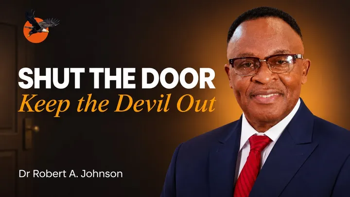

The battle starts in the mind.
You cannot stop every wrong thought from arriving, but you can refuse to let it settle.
Sunday 22 November 2026
A simple look at how Sunday's message is being shared beyond the church.
We've prepared 18 short videos, 3 picture collections and 4 picture posts, to share from 23 to 28 November.
No social media knowledge needed. Just tap Explore the roundup below.

A note of thanks
Dr Johnson, thank you for bringing the word to Calvary Hephzibah on Sunday.
“Shut the Door” was plain, practical and full of the Scriptures, and it is now going out beyond our four walls in short videos, carousels and picture posts across Instagram, TikTok, YouTube and Facebook. We are grateful for your time, your wisdom and the warmth you brought to the house.
The message
Guard your mind, refuse what doesn't belong to God and draw near to Him. James 4:7–8.
You cannot stop every wrong thought from arriving, but you can refuse to let it settle.
Bitterness, envy, covetousness and pride are things Dr Johnson urged us to clear out.
Read His word, make time for fellowship and pray together as a family.
What we allow into the foundations of our homes, businesses and careers matters.
Humility is spiritual. Hand your life to God. Dr Johnson was clear that this does not mean we should stop planning or saving.
Five thoughts from the sermon. The full message goes deeper.
What we've prepared
94 planned posts across Instagram, TikTok, YouTube and Facebook, from one sermon.
18 videos (72 posts), 3 collections (10 posts) and 4 pictures (12 posts). 25 original pieces in total.
23–28 November, Monday to Saturday.
87 posts scheduled in GoHighLevel; 7 YouTube picture posts planned for manual scheduling.
As checked on 23 November at 05:20 UK: none confirmed published. These figures are planned posts, not views or people reached.
| Church account | Planned posts |
|---|---|
| 25 | |
| Facebook (Calvary Hephzibah) | 25 |
| YouTube | 25 |
| TikTok | 19 |
| Total | 94 |
A carousel is a collection of pictures posted together. We count each collection as one post per account, not seven separate posts.
A caption is the writing that goes with a video or picture online. You can read the exact words on the next screens.
Short videos
Watch a short moment from the sermon, or look at more if you wish. You don't need to watch all 18. Next step is always at the bottom.
Picture collections
A picture collection (carousel) tells a story over several pictures. Tap Next picture to read it in order. Next step takes you onwards.
Picture posts
Each picture carries a thought from Sunday. Tap the picture to see it larger, or read the words underneath.
The full message
The short videos give you a few moments from Shut the Door (Keep the Devil Out).
Watch here, or press Next step whenever you are ready to carry on.
The final step
You don't have to make videos or understand social media. Here are three simple ways to help share Sunday's message.
When you see one of our pictures or videos, tap the heart or thumbs-up button.
Tap Share beneath a post and choose a friend or family member.
Once the page is published, send the link to someone who might appreciate the message.
Available after publication.
Choose an app you already use. You don't need to visit them all.
Thank you again, Dr Johnson.
That's the end of the tour. Press Start again below or choose any step at the top.
Your journey
Choose a step, or return to where you were.